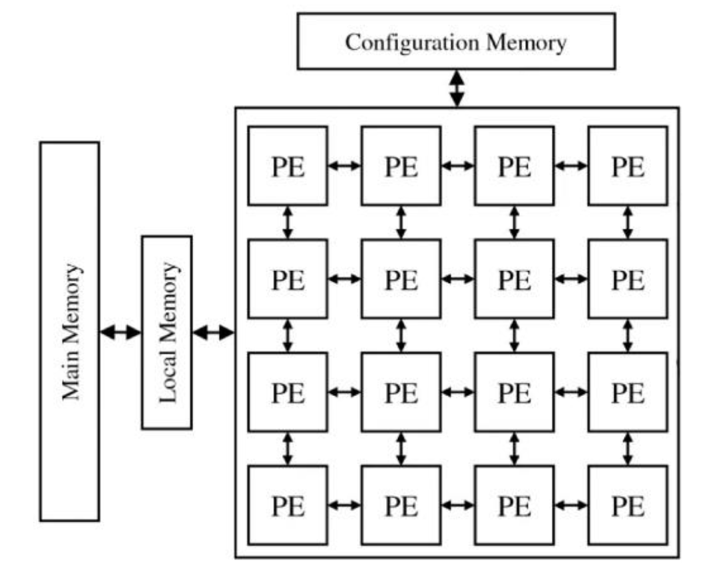
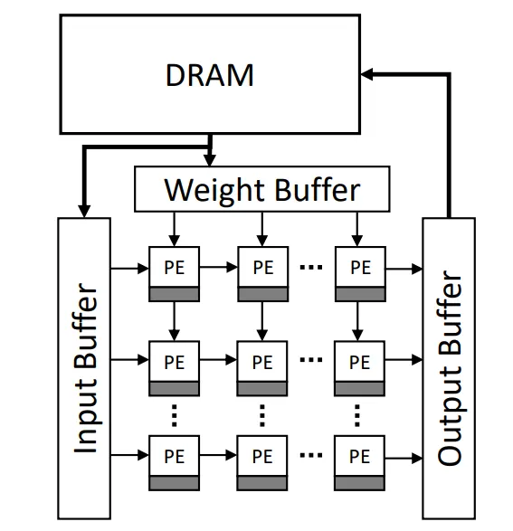
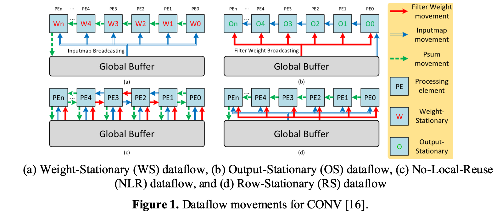
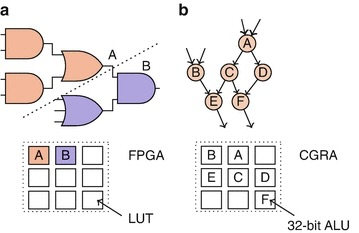
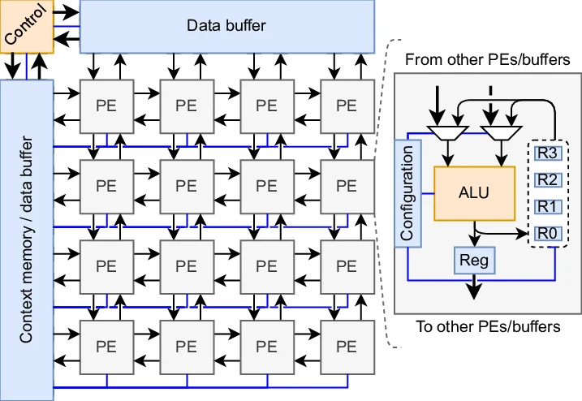
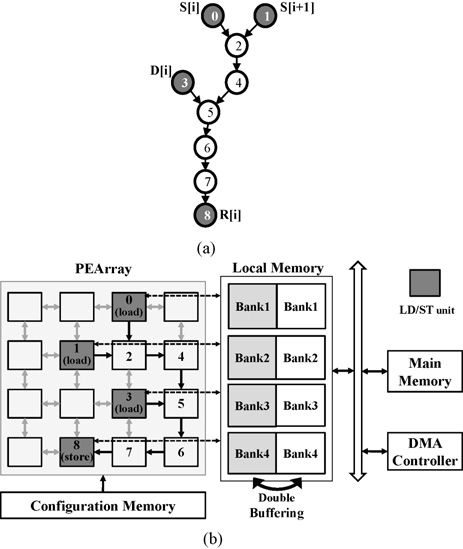
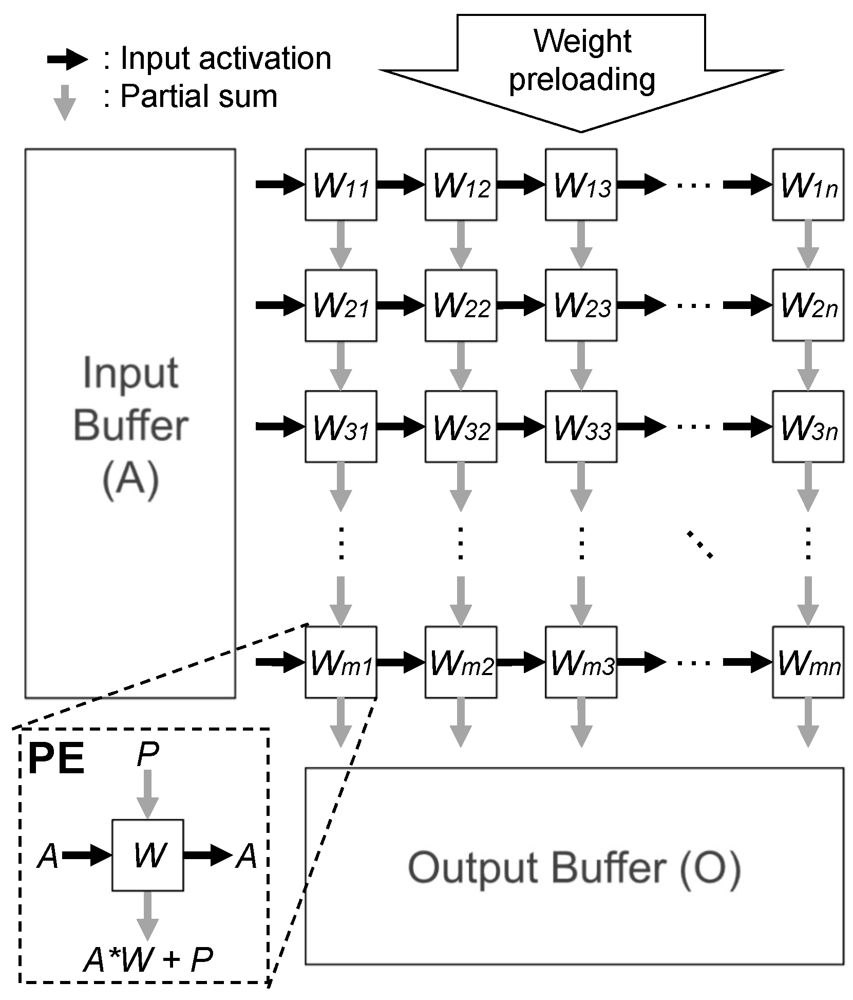
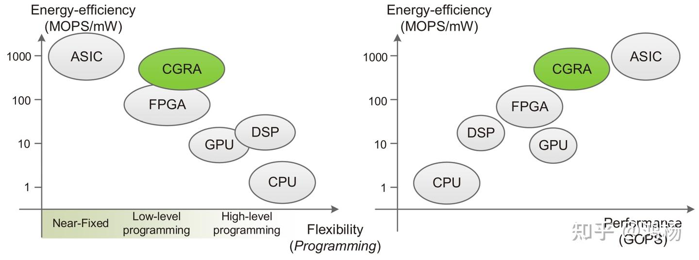

从计算粒度与数据流，看 FPGA、CGRA 与脉动阵列
以深度学习硬件加速为背景，理解计算粒度、数据流与可重构性之间的取舍
两张架构图摆在一起时，粗粒度可重构阵列（Coarse-Grained Reconfigurable Array, CGRA）和脉动阵列（Systolic Array）很容易被看成同一种机器。
|
 (a) CGRA |
 (b) Systolic Array |
图 1：CGRA 与脉动阵列的外观对照。两者都有规则排列的处理单元（Processing Element, PE）、相邻节点之间的连线以及阵列外部的存储系统，也都可以加速卷积和矩阵乘法；真正的差异隐藏在 PE 功能、互连可配置性和数据传播方式之中。
但相似的网格之下，隐藏着两套不同的执行逻辑。
CGRA 关心的是：一个计算图能否被重新映射到不同的处理单元和通信路径上。 脉动阵列关心的是：数据能否按照预先设计的节拍和方向，连续穿过一组规则连接的处理单元。 前者把“可重构性”放在中心，后者把“规则的数据传播”推向极致。
这一区别也提供了理解现场可编程门阵列（Field-Programmable Gate Array, FPGA）、CGRA 与 AI 专用加速器的入口。Jiawei Luo 在 2024 年发表的论文 A comparative study of FPGA and CGRA technologies in hardware acceleration for deep learning，正是从计算粒度和数据流出发，对 FPGA 与 CGRA 进行了综述式比较。论文认为，在它选取的案例中，FPGA 往往表现出更高的吞吐量，而 CGRA 在能效和面积上更有优势。[1]
这个结论抓住了两类架构的典型取舍，却不能脱离论文的比较条件单独成立。要理解原因，需要先从深度学习加速器真正消耗时间与能量的地方说起。
深度学习加速器首先是一台数据搬运机器
卷积神经网络中的大量计算最终都会落到乘加操作上。每个处理单元接收输入激活
如果只看算式，设计加速器似乎只是不断增加乘法器和加法器。但在真实芯片中，计算单元必须先拿到正确的权重和激活，计算后的部分和还要被保存、传递或继续归约。数据可能来自 PE 内部的寄存器，也可能来自片上 SRAM，甚至来自片外 DRAM。距离越远，访问延迟和能耗通常越高。
于是，硬件加速的核心问题从“能并行放下多少乘法器”变成了“怎样让数据少走路”。
这也是 Luo 的论文先讨论 dataflow，再讨论 FPGA 和 CGRA 的原因。Dataflow 决定了计算在时间和空间中的安排方式：哪个数据留在本地，哪个数据沿阵列传播，部分和在哪里累积，以及一份数据能被多少个 PE 复用。
Dataflow：让最昂贵的数据少走几步
卷积加速器中常见的 Weight Stationary、Output Stationary 与 Row Stationary，并不是三种芯片，而是三种数据驻留策略。

图 2：四种卷积数据流中的数据移动。红色表示权重，蓝色表示输入激活，绿色虚线表示部分和。WS 与 OS 分别把权重和输出留在 PE 附近；NLR 几乎不利用 PE 内部复用；RS 则尝试同时挖掘多类数据的局部复用。图片来自 Luo 论文 Figure 1。[1]
这张图值得关注的不是四组连线的形状，而是每种颜色跨越存储层次的次数。某类数据一旦能够在 PE 内停留或在相邻 PE 之间复用，就不必为每次乘加重新访问全局缓冲区；dataflow 的价值，正是用空间上的局部通信替代代价更高的远距离搬运。
| 数据流 | 主要驻留对象 | 数据组织方式 | 主要收益 |
|---|---|---|---|
| Weight Stationary（WS） | 权重 | 权重留在 PE 附近，激活和部分和流动 | 减少权重的重复读取 |
| Output Stationary（OS） | 输出部分和 | 部分和留在本地，激活与权重不断到达 | 减少中间结果的读写与传递 |
| Row Stationary（RS） | 行级相关数据 | 在局部同时复用权重、激活与部分和 | 综合降低多类数据移动 |
| No Local Reuse（NLR） | 不强调驻留 | 数据频繁经过外部或共享存储 | 减少 PE 内寄存器需求，但通信量较高 |
这里的“Stationary”不是绝对静止，而是指一类数据在一段计算期间被保留在 PE 或邻近存储中，多次参与运算。
更重要的是，dataflow 与硬件平台并不一一对应。FPGA 可以实现 WS、OS，也可以搭建脉动式数据通路；CGRA 可以在不同 kernel 之间改变数据流；专用 ASIC 同样可能支持多种驻留策略。硬件之间真正的差别，在于改变这些计算和通信关系时，需要付出多少资源、能量与编译成本。
FPGA：把电路本身变成可编辑对象
FPGA 的基本资源包括查找表（LUT）、触发器、片上存储、DSP 单元和可编程互连。配置比特决定每个逻辑块实现什么布尔功能，也决定不同资源之间怎样连接。
“细粒度可编程”描述的正是这种能力。设计者可以控制数据通路的位宽、流水线深度、存储分块、地址生成和控制逻辑，甚至能针对某种模型使用非标准数值格式。一个 8-bit 乘加器、一个特殊激活函数或一条完全定制的流式管线，都可以直接由底层资源组合出来。
灵活性也带来明显成本。为了让任意逻辑和连线都能被重新配置，FPGA 必须保留大量配置 SRAM、多路选择器和通用路由资源。同一个字级乘加运算，在 FPGA 上往往需要穿过比专用电路更复杂的可编程结构。芯片面积和功耗中，有相当一部分用于“保持一切皆可改变”，而不是直接完成目标计算。

图 3：细粒度与粗粒度重构的概念对比。左侧 FPGA 将布尔函数分解并映射到 LUT；右侧 CGRA 将数据流图中的字级运算映射到已经具备算术功能的 ALU。图片引自 Ansaloni 的博士论文 Figure 1.1。[7]
图中的差异可以概括为“被配置对象的粒度不同”：FPGA 的可编辑对象接近逻辑门和位级连线，CGRA 的可编辑对象则接近完整算子及其数据依赖。这不是说 FPGA 只能处理布尔逻辑，也不是说所有 CGRA 都使用 32-bit ALU；它强调的是，两者为获得灵活性所保留的硬件层级不同。
Luo 的论文选取了三个 FPGA 案例：
- nn-X 采用 ARM 主处理器与 FPGA 协处理器的组合，把固定权重缓存在片上，让激活在定制计算单元之间流动，体现了 WS 思路。论文表格报告其吞吐量为 227 GOPS，功耗为 8 W。
- Memory-Centric Accelerator 把优化重点放在存储层次和复用缓冲区上，使用 tiling 与循环变换降低外部带宽需求。论文转述的结果是，相同 FPGA 资源下性能提高 11 倍，或在相同性能下将资源使用量降低到原来的约十三分之一。
- Caffeine 使用 systolic-like PE 组织卷积和全连接层，通过 input-major 与 weight-major 映射增加数据复用。论文表格给出的吞吐量为 354 GOPS，功耗为 26 W。
Caffeine 揭示了一条容易被混淆的边界：FPGA 和脉动阵列不是互斥选项。 FPGA 描述的是底层硬件怎样被实现和配置，脉动阵列描述的是计算单元如何连接、数据如何传播。一块 FPGA 完全可以被配置成脉动阵列。
CGRA：把算子与通信路径变成可编辑对象
CGRA 同样具有可重构性，但它不再从布尔逻辑和位级布线开始。典型 CGRA 由一组处理单元（PE）、配置存储、可编程互连以及局部或全局存储组成。每个 PE 通常已经能够执行加法、乘法、MAC、比较或逻辑运算。

图 4：一个简化的 4×4 CGRA 及 PE 内部结构。阵列周围的数据缓冲区和上下文存储分别保存操作数与配置；PE 内的输入选择器、ALU 和寄存器共同决定“数据从哪里来、执行什么运算、结果到哪里去”。图片引自 Damsgaard、Ometov 与 Nurmi 的 Figure 1。[8]
如果把 FPGA 比作一套可以自由搭建墙体、电路和管线的建筑材料，CGRA 更像一座已经放置好机器和通道的工厂。重新配置时，不必从逻辑门开始搭建乘法器，而是决定每台机器执行哪种运算，以及中间结果沿哪条通道抵达下一台机器。
CGRA 的编译器会把程序中的数据流图映射到物理阵列。这个过程至少包含四个相互制约的问题：操作放在哪个 PE 上，操作在哪个周期执行，中间值经过哪条路由，以及输入和结果放在哪一级存储。空间资源不足时，同一个 PE 还可以在不同周期执行不同操作，形成时间复用。

图 5：从程序数据流图到 CGRA 的空间映射。上方节点表示循环中的操作及依赖；下方把这些操作放置到 PE 阵列，并将数据安排到多 Bank 局部存储。深色节点对应 load/store 等访存操作，虚线表示它们与存储系统之间的关联。图片引自 Kim 等人的 CGRA 映射研究。[9]
这幅图把“可重构”从抽象概念变成了一个编译问题：数据流图的节点变成某个 PE 在某个周期执行的操作，边变成阵列中的传输路径，而数组元素还要被分配到不会发生同时访问冲突的存储 Bank。图中的双缓冲让 DMA 可以在一组数据参与计算时搬运下一组数据，从而把外部访存与阵列执行重叠起来。映射质量因此不仅取决于 PE 是否够用，也取决于路由拥塞、存储 Bank 冲突和数据预取能否同时得到满足。
这种字级或算子级重构省去了 FPGA 大量细粒度配置开销，因此 CGRA 通常被视为专用 ASIC 与 FPGA 之间的折中：它试图接近专用电路的性能和能效，同时保留软件可编程性。Podobas、Sano 与 Matsuoka 的 CGRA 综述也把“性能与可编程性之间的平衡”视为这一架构家族的核心特征。[2]
Luo 的论文讨论了几种不同形态的粗粒度空间加速器：
| 设计 | 主要结构 | 数据流与可重构特征 | 原论文强调的结果 |
|---|---|---|---|
| NP-CGRA | 面向 MobileNet 的 MAC PE 与高带宽本地存储总线 | OS；分别适配深度卷积与逐点卷积 | DWC/PWC 的面积-时延积相对传统 CGRA 改善 8×/18× |
| SDT-CGRA | RC 计算矩阵与 SBU 流缓冲矩阵 | 静态配置计算功能，动态调度数据流 | 77.4 GOPS、1.526 W、50.78 GOPS/W |
| MAERI | 可配置乘法开关、加法归约树和重构互连 | 支持不同大小的虚拟神经元与多种 dataflow | 相对固定互连基线，PE 利用率提高 8%–459%[3] |
| Eyeriss v2 | 层次化 mesh NoC 与稀疏数据处理 | RS+；按层适配复用量和带宽需求 | 原工作强调紧凑、稀疏模型上的资源利用率与能效[4] |
不过，这张表也暴露出 CGRA 分类的弹性。MAERI 和 Eyeriss v2 确实具备粗粒度 PE、空间映射和可配置通信，但许多文献会把它们称为 spatial DNN accelerator 或专用 ASIC，而不是一般意义上的 CGRA。原论文采用了较宽的定义，把“具有粗粒度可重构特征的空间加速器”都放入 CGRA 一侧。这个选择适合讨论架构趋势，却不是唯一的分类标准。
原论文的数字应该怎样读
论文把不同设计的吞吐量、功耗、能效与面积汇总在同一张表中，并据此认为 FPGA 整体上拥有较高吞吐量，CGRA 则拥有更好的能效和面积表现。下面保留其中主要数据：
| 架构 | 平台或工艺 | 吞吐量 | 功耗 | 论文列出的能效 |
|---|---|---|---|---|
| nn-X | Xilinx ZC706 | 227 GOPS | 8 W | 25 GOPS/W |
| Memory-Centric | Virtex-6 ML605 | 17 GOPS | N/A | N/A |
| Caffeine | Virtex-7 690T | 354 GOPS | 26 W | 13.6 GOPS/W |
| Angel-Eye | Zynq XC7Z045 | 137 GOPS | 9.63 W | 14.2 GOPS/W |
| FP-DNN | Stratix-V | 364.4 GOPS | 25 W | 14.57 GOPS/W |
| NP-CGRA | TSMC 28 nm | 64 GOPS | N/A | N/A |
| SDT-CGRA | SMIC 55 nm | 77.4 GOPS | 1.526 W | 50.78 GOPS/W |
| MAERI | TSMC 28 nm | N/A | 0.3 W | N/A |
| Eyeriss v2 | TSMC 65 nm | 153.6 GOPS | 1.65 W | 253.2 GOPS/W |
| DNPU | 65 nm CMOS | 1.2 TOPS | 0.279 W | 3.9 TOPS/W |
| ISSCC19-7.4 | 65 nm CMOS | 206 GOPS | 0.0024–0.196 W | 2.16 TOPS/W |
这组数字适合观察“样本中的架构倾向”，不适合形成跨平台排名。表中的 FPGA 开发板和 28/55/65 nm ASIC 来自不同年份，采用不同的模型、数值精度、稀疏策略、batch size 和测量范围。即使都使用 GOPS，一次 MAC 究竟计为一次还是两次操作，也可能没有统一。
面积结论尤其需要谨慎。论文表中的五个 FPGA 案例都没有给出平方毫米面积，CGRA 一侧却使用实际芯片面积。由此可以说明部分 CGRA/ASIC 实现很紧凑，却无法仅凭这张表完成 FPGA 与 CGRA 的面积对照。
表内还有几处数值无法直接相互推导。Eyeriss v2 一行给出的 153.6 GOPS 除以 1.65 W，约为 93.1 GOPS/W，与能效列的 253.2 GOPS/W 不一致；nn-X 的 227 GOPS 除以 8 W 约为 28.4 GOPS/W，而不是 25；DNPU 的两列相除约为 4.30 TOPS/W，与表中的 3.9 TOPS/W 也存在差异。它们可能来自不同运行点、精度或稀疏口径，也可能是转录问题，但论文没有提供足够说明。
因此，原论文的结论更适合改写成下面这句话：
在所选案例中，细粒度重构展现了高度定制并行数据通路的能力；粗粒度或专用空间加速器则通过更直接的算术单元和互连设计，表现出较高能效潜力。
这是一种设计空间判断，而不是一条“FPGA 必然更快、CGRA 必然更省电”的定律。表中吞吐量达到 1.2 TOPS 的 DNPU，本身就是对简单概括的提醒。
两张相似的网格，语义完全不同
理解完 FPGA 与 CGRA，再回看脉动阵列，就能发现“长得像”并不等于“执行方式相同”。

图 6：一种权重驻留脉动阵列。权重预加载到 PE，输入激活向右传播，部分和向下传播。
图 4 中的箭头首先表示可选的数据路径：配置决定 PE 执行何种操作，也决定数据可以从哪个邻居到达、又发往哪里。图 6 中的箭头则表示计算协议本身：激活每拍向右移动，部分和每拍向下移动，每个 PE 用本地权重完成一次乘加。
二者的共同点来自空间计算范式。它们都把计算展开到物理空间，让中间结果直接在相邻 PE 之间传递，从而避开中央寄存器文件或频繁的远端存储访问。差异在于，CGRA 为改变计算图和路由保留了配置能力，脉动阵列则通过规则化传播减少控制和通信开销。
| 维度 | 典型 CGRA | 典型脉动阵列 |
|---|---|---|
| 设计目标 | 在效率与可重构性之间平衡 | 让规则依赖计算持续、高密度地推进 |
| PE 功能 | 多功能 ALU/MAC，可包含寄存器和谓词支持 | 高度同构，常以 MAC 或简单算子为主 |
| 互连 | 可编程，可支持多方向、多跳、广播或归约 | 多为固定邻接连接和规则传播方向 |
| 控制 | 配置上下文与静态时空调度，部分设计支持动态机制 | 全局节拍下规则推进，控制隐含在数据到达时序中 |
| 映射问题 | 数据流图的放置、调度、路由与存储映射 | 规则循环依赖到空间坐标和时间拍的投影 |
| 适合负载 | 多种 DSP/DNN kernel、需要切换映射的循环 | GEMM、卷积与规则 stencil 等仿射依赖计算 |
| 主要代价 | 配置存储、灵活互连和复杂编译器 | 非规则形状、分支或动态稀疏下的低利用率 |
这张对照表描述的是典型倾向，不是定义清单。CGRA 不一定采用图 4 的双向最近邻网络，也不一定逐周期动态重构；脉动阵列不一定采用图 6 的权重驻留，也不一定由 ASIC 实现。把一张示意图中的属性扩大成整个架构类别的必要条件，会让比较失真。
脉动不是一种芯片材质，而是一种执行秩序
对于矩阵乘法
在一种经典二维脉动映射中，
阵列填满后，每个周期都可能有大量 PE 同时进行有效计算。没有复杂的全局寻址，也不需要每个 PE 独立获取和解码指令。这种规则性使脉动阵列特别适合密集矩阵乘法。Google 第一代数据中心 TPU 的核心矩阵乘单元包含 65,536 个 8-bit MAC，正是专用矩阵计算组织的代表。[5]
规则性也会形成边界。阵列启动和排空需要额外周期，矩阵尺寸无法整除阵列维度时需要 padding，小矩阵或极端长宽比会留下空闲 PE。面对动态稀疏、条件分支和不规则访存时，峰值 TOPS 更难转化为实际吞吐。
这说明脉动阵列不是 CGRA 的严格子类，也不能被简单理解成“功能更少的 CGRA”。更准确的关系是：
- CGRA 是一种以粗粒度 PE 和可重构映射为核心的架构类别；
- 脉动阵列是一种规则的时空执行与通信组织；
- CGRA 可以配置出脉动式数据流，但它的配置空间远大于这一种模式；
- FPGA 或 ASIC 也可以成为脉动阵列的实现载体。
换句话说，CGRA 描述“机器允许改变什么”，脉动阵列描述“计算按什么秩序发生”。
从刚性阵列到可重构数据流
真实工作负载很少永远保持同一种形状。即使一个神经网络主要由卷积和矩阵乘组成，不同层的通道数、特征图大小、复用机会和稀疏率也可能相差很大。固定 dataflow 在某些层上高效，在另一些层上却会因带宽不足或 PE 空闲而失去优势。
这推动了专用阵列和 CGRA 在设计上的靠近。
MAERI 通过可配置的分发与归约网络，让同一组乘法器支持不同大小的虚拟神经元和多种数据流。Eyeriss v2 的层次化 mesh 则根据层形状调整带宽和数据复用，并直接处理压缩的稀疏权重与激活。它们未必符合所有人对 CGRA 的严格定义，却共享同一个方向：保留空间计算的局部通信优势，同时降低固定数据流面对多样化模型时的利用率损失。[3][4]
编译器也在利用两类架构的交集。HiMap 在应用循环与物理 CGRA 之间引入“虚拟脉动阵列”作为中间抽象，先提取规则的迭代依赖，再把少量重复模式映射到 CGRA 子区域。论文报告称，这种层次化方法能在大型阵列上显著降低编译时间，并改善映射性能与能效。[6]
这个例子很有代表性：脉动结构不仅是一种硬件实现，也可以成为理解和编译规则计算的数学工具。CGRA 则提供了更宽的物理底座，使同一套硬件有机会在规则计算与其他数据流之间切换。
规则性、灵活性与效率之间没有免费午餐
把 FPGA、CGRA 与脉动阵列放在同一张设计图上，可以看到一条连续光谱。

图 7：不同计算架构在能效、可编程灵活性与性能维度上的定性位置。本文讨论的专用脉动阵列通常以 ASIC 实现，因此可以落在图中的 ASIC 区域；CGRA 与 FPGA 则分别代表粗粒度和细粒度可重构计算。椭圆的位置和范围仅表达典型趋势，不是统一工作负载、工艺和精度下的基准测试结果。图片为知乎转载版本，原始制图来源与数据口径未能确认。
这张示意图提供了一个直观的设计空间视角：通用处理器依靠软件和指令集获得较高灵活性，专用 ASIC 则通过固定更多结构追求性能与能效；FPGA 和 CGRA 位于两者之间，而 CGRA 通常希望用字级算术单元换取比 FPGA 更低的配置和互连开销。相关 CGRA 综述也将“接近硬件的性能与能效，同时保留软件可编程性”概括为这类架构的核心目标。[10]
FPGA 把位级逻辑和布线都开放给设计者，能表达最特殊的数据路径，却为这种自由承担最高的配置与路由成本。CGRA 预先定义字级算术单元，只开放操作、连接和时序映射，在效率与通用性之间取中间位置。专用脉动阵列进一步固定 PE 和数据传播规则，用更窄的适用范围换取更高计算密度、更简单的控制和更可预测的执行。
更高灵活性 ← FPGA（位级逻辑与布线可编程） → CGRA（算子与互连可重构） → 专用脉动阵列（规则 PE 与数据传播） → 更高专用效率与可预测性
这条光谱不是硬件排行榜。算法是否规则、张量形状是否稳定、是否需要特殊位宽、外部带宽是否充足、编译器能否找到高质量映射，都会改变最终答案。更现实的系统通常也不是三选一，而是让脉动或向量单元承担密集线性代数，让标量核处理控制与非线性操作，再用可配置互连、局部存储和 DMA 把不同计算区域组织起来。
因此，评价一台 AI 加速器不能只看阵列，也不能只看峰值 TOPS。计算、存储、互连、数值格式、编译器和实际模型共同决定了芯片最终能兑现多少理论性能。
结语：真正的分界在于“固定什么”
Luo 的论文提供了一个有用的入口：FPGA 的细粒度可编程性扩大了定制空间，CGRA 的粗粒度 PE 和互连减少了实现算术与通信的冗余。在论文收集的案例中，前者表现出较高吞吐潜力，后者表现出较好的能效倾向。
它的定量比较仍有明显限制。不同工艺、精度、模型和测量口径不能组成严格的横向基准，宽口径的 CGRA 分类也会影响结论。但这些问题并不会削弱文章最有价值的启示：硬件加速器的差异，最终来自设计者选择把哪些结构固定下来，又把哪些自由度留给配置和软件。
CGRA 与脉动阵列之所以相似，是因为它们都属于空间计算；它们之所以不同，是因为前者保留重新安排计算和路径的能力，后者依靠严格的传播秩序消除控制开销。
网格只是表象。真正定义一台机器的，是数据在网格中遵循的规则。
参考资料
[1] J. Luo, “A comparative study of FPGA and CGRA technologies in hardware acceleration for deep learning,” Applied and Computational Engineering, vol. 51, pp. 168–180, 2024. DOI: 10.54254/2755-2721/51/20241212
[2] A. Podobas, K. Sano, and S. Matsuoka, “A Survey on Coarse-Grained Reconfigurable Architectures From a Performance Perspective,” IEEE Access, 2020. DOI: 10.1109/ACCESS.2020.3012084, arXiv:2004.04509
[3] H. Kwon, A. Samajdar, and T. Krishna, “MAERI: Enabling Flexible Dataflow Mapping over DNN Accelerators via Reconfigurable Interconnects,” ASPLOS, 2018. DOI: 10.1145/3173162.3173176
[4] Y.-H. Chen, T.-J. Yang, J. Emer, and V. Sze, “Eyeriss v2: A Flexible Accelerator for Emerging Deep Neural Networks on Mobile Devices,” IEEE JETCAS, 2019. Eyeriss 项目页, arXiv:1807.07928
[5] N. P. Jouppi et al., “In-Datacenter Performance Analysis of a Tensor Processing Unit,” ISCA, 2017. Google Research
[6] D. Wijerathne, Z. Li, A. Pathania, T. Mitra, and L. Thiele, “HiMap: Fast and Scalable High-Quality Mapping on CGRA via Hierarchical Abstraction,” IEEE TCAD, 2021. 论文信息与作者页面
[7] G. Ansaloni, Architectural Exploration and Scheduling Methods for Coarse Grained Reconfigurable Arrays, doctoral thesis, Università della Svizzera italiana, 2011. 机构知识库记录
[8] H. J. Damsgaard, A. Ometov, and J. Nurmi, “Generating CGRA Processing Element Hardware with CGRAgen,” 26th Euromicro Conference on Digital System Design, 2023. DOI: 10.1109/DSD60849.2023.00011, 机构知识库记录
[9] Y. Kim, J. Lee, A. Shrivastava, and Y. Paek, “Operation and Data Mapping for CGRAs with Multi-bank Memory,” ACM SIGPLAN Notices, vol. 45, no. 4, pp. 17–25, 2010. DOI: 10.1145/1755951.1755892
[10] L. Liu, J. Zhu, Z. Li, Y. Lu, Y. Deng, J. Han, S. Yin, and S. Wei, “A Survey of Coarse-Grained Reconfigurable Architecture and Design: Taxonomy, Challenges, and Applications,” ACM Computing Surveys, vol. 52, no. 6, Article 118, 2019. DOI: 10.1145/3357375